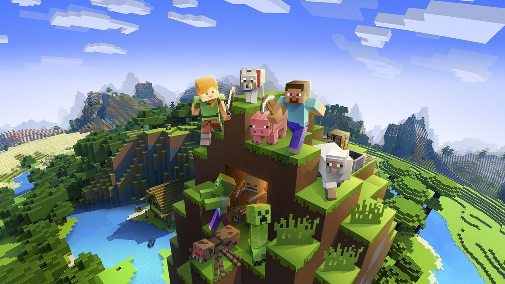
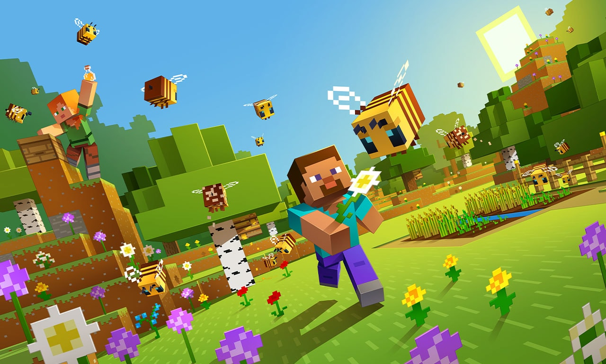

Starting a New Minecraft World
October 6, 2026 by Chiantina Lawrence

Starting a new Minecraft world can be exciting because there are so many
things to explore and discover. From collecting resources and building a
shelter to exploring different environments, there is always something new to do.
One of my favourite parts of Minecraft is being able to create things in my
own way. Building a house or exploring a new area takes planning and
creativity, and each new project can be different from the last.
Building and Exploring
October 6, 2026 by Chiantina Lawrence

Minecraft gives players the freedom to build almost anything they can
imagine. Whether it is a small house, a large castle or an entire village,
building takes time and patience.
Exploring is another part of the game that makes it interesting. Finding
new places, collecting useful resources and discovering different areas
can make every Minecraft world feel different. It is that constant excitement of not knowing
what you will stumble into next, whether it is a hidden cave or a breathtaking view.